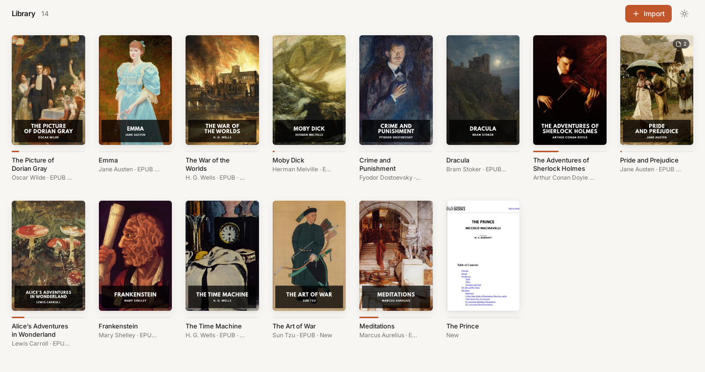
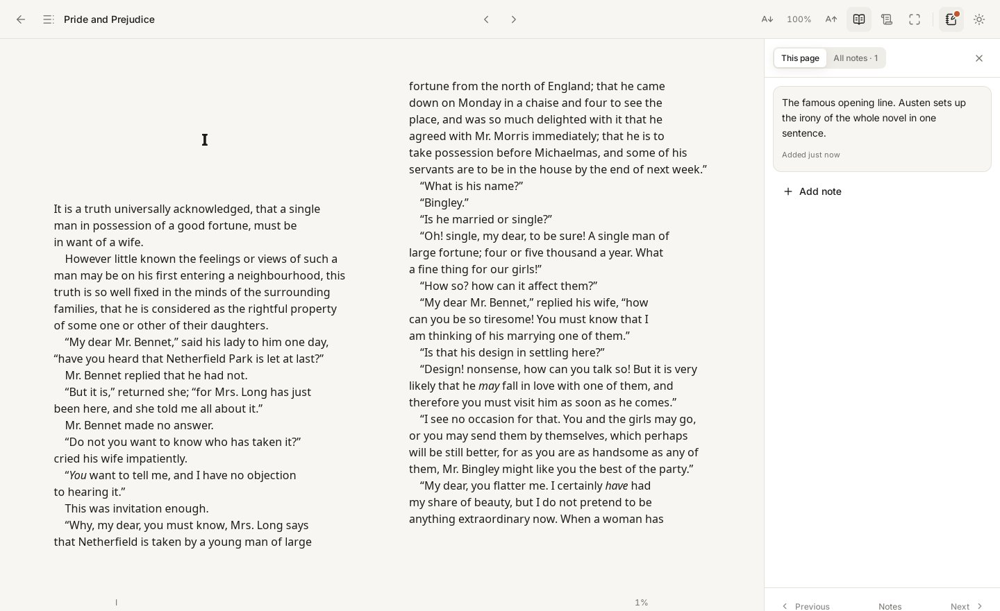
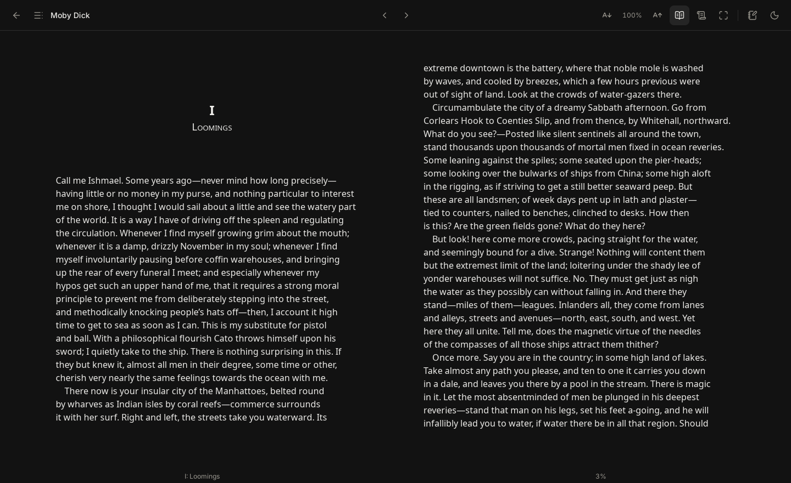
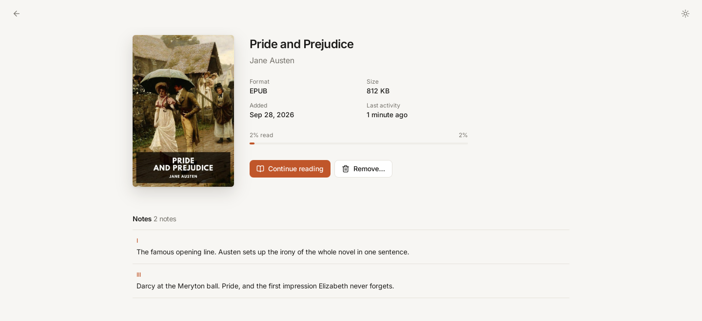
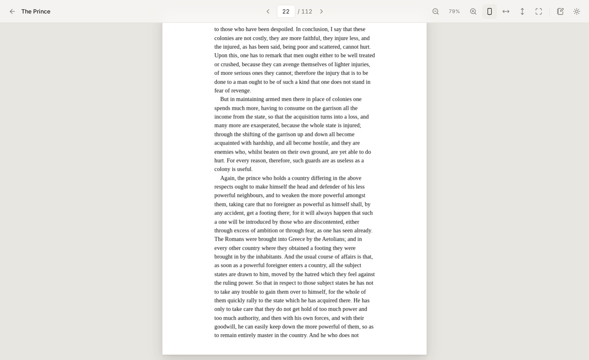

A shelf, not a file list
Import books with the file picker or drag and drop. Each one gets its cover, title, author and a progress bar — and the books you touched last come first.
Oikotheke is a desktop app to organize, read and annotate your PDF and EPUB books. Your files, reading progress and notes never leave your machine.

Import books with the file picker or drag and drop. Each one gets its cover, title, author and a progress bar — and the books you touched last come first.
Every book is copied into the app's storage, so moving or deleting the original never breaks your library. The same book is never imported twice.
PDFs page by page with zoom and fit modes. EPUBs as book-like pages or a continuous scroll, with contents, font size and light or dark themes. Focus mode hides the rest.
Your position is saved as you read, with no save button, and restored when you open the book again — even after restarting the app.
Write notes while reading, see which pages have them, jump between them, and review them all on the book's page.
EPUB content can't run scripts or reach the network, and web links open in your browser only after you confirm where they go.




There is no server to send anything to. Books, covers, progress and notes live in a folder and a SQLite database on your computer, and the app works fully offline. If a sync feature ever comes, it will be optional.
~/.local/share/io.github.marcos-venicius.oikotheke/
├── library/
│ └── <book-id>/
│ ├── book.epub
│ └── cover.jpg
└── oikotheke.dbFor Windows 10 and 11 (64-bit). It installs for your user, without administrator rights, and adds Oikotheke to the Start menu. The installer isn't code-signed yet, so Windows may say it "protected your PC": choose More info → Run anyway. Every release is on GitHub.
Oikotheke is built from source. You need WebKitGTK 4.1 at runtime (libwebkit2gtk-4.1-0
on Debian and Ubuntu), plus Node 20+ and stable Rust to build.
git clone https://github.com/marcos-venicius/oikotheke.git
cd oikotheke
scripts/install.sh # installs for your user, in ~/.local
It then shows up in your applications menu.
scripts/install.sh --system installs for all users;
scripts/uninstall.sh removes the app and keeps your library.
οἶκος + θήκη
Oîkos, "home", and thḗkē, "case" — the same thḗkē as in bibliothḗkē, library. Oikotheke is the home shelf: a personal library that lives with you.